NPS内网穿透
Posted
一、NPS的GitHub页面地址
GitHub：https://github.com/cnlh/nps
二、进入releases安装页面
releases github:https://github.com/cnlh/nps/releases
找到你需要的版本，我这里用的服务器是ubuntu16.04，那么也就是Linux的64位版本，所以我需要下载对应的客户端和服务端。
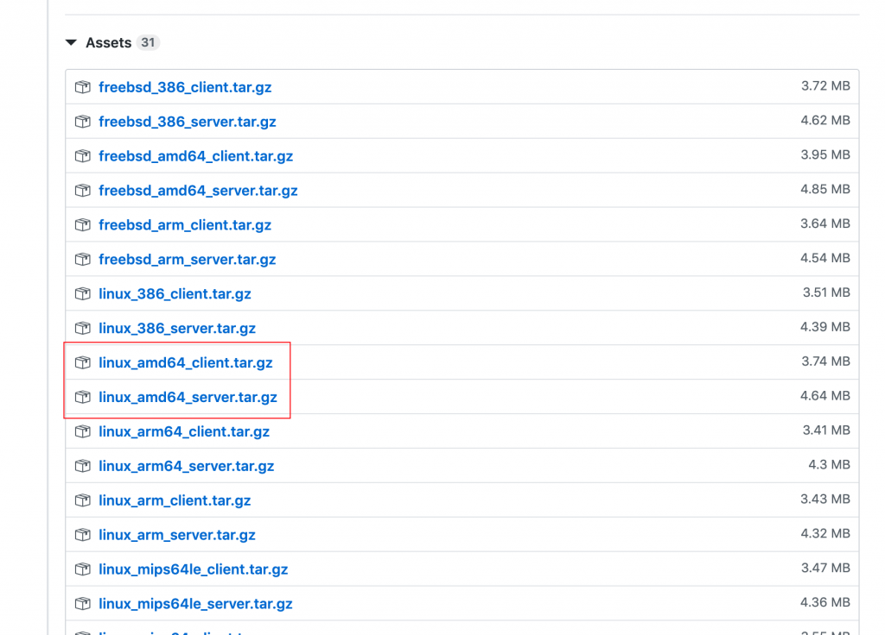
三、登录你的服务器的SSH配置NPS服务端
1.我这里用的阿里云，没有安装wget，就安装一下。
# Debian/Ubuntu: apt install wget -y
# Centos/Rhel: yum install wget -y
2.从github上获取最新版本的nps服务端
wget https://github.com/cnlh/nps/releases/download/v0.23.1/linux_amd64_server.tar.gz
3.进行解压
tar xvf linux_amd64_server.tar.gz
4.启动服务端
./nps start
四、输入服务器的IP地址加8080端口号，即可进入NPS的后台界面
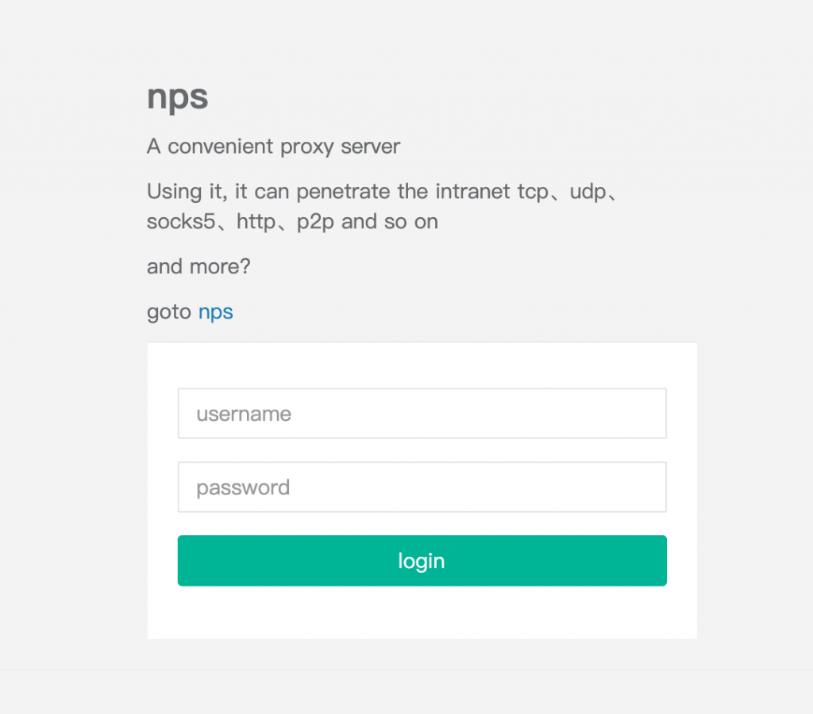
默认用户名：admin 默认密码：123
五、登录后台，添加一条客户端
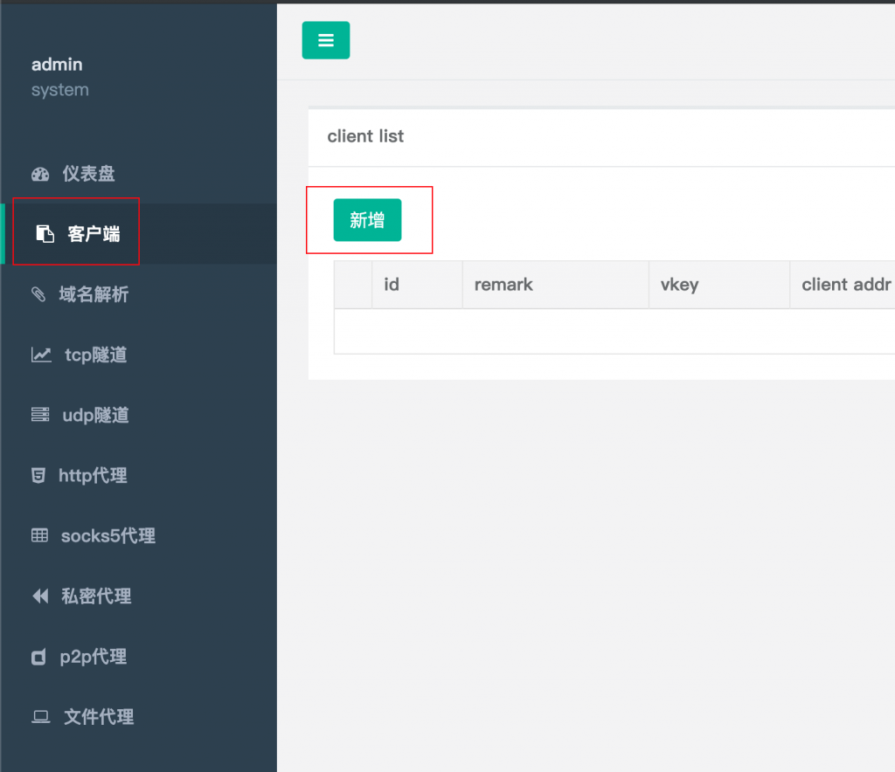
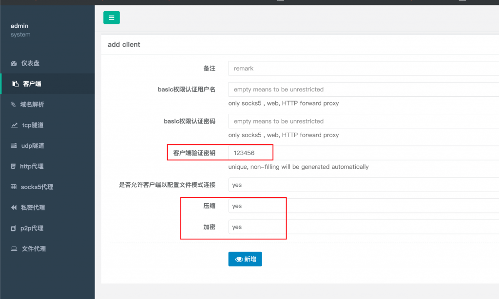
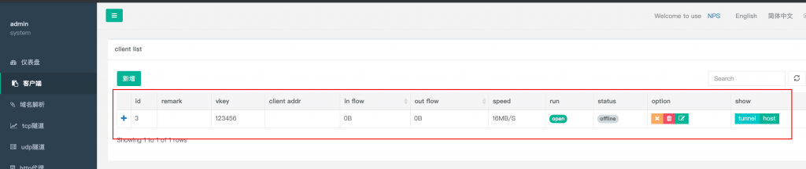
六、配置客户端
SFTP功能 (这里使用香橙派)
apt update apt install openssh-sftp-server下载NPS客户端(自己是啥就下载啥)
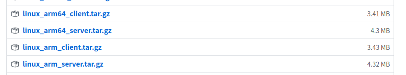
wget https://github.com/cnlh/nps/releases/download/v0.23.1/linux_arm64_client.tar.gz
解压
tar xvf linux_arm64_client.tar.gz
七、启动客户端
1.临时启动客户端测试
./npc -server=(ip:port) -vkey=(web界面中显示的密钥)
例子：
./npc -server=35.221.192.140:8024 -vkey=123456
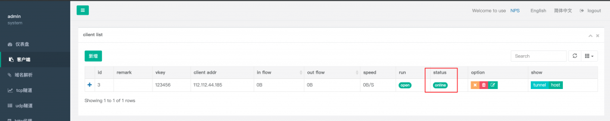
临时连接成功 客户端显示online
2.常驻客户端后台
nohup ./npc -server=(ip:port) -vkey=(web界面中显示的密钥)
八、解析域名并绑定
1.进入域名后台解析一个域名到你的服务端的IP上
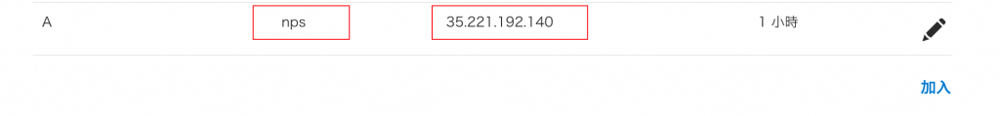
2.进入NPS后台绑定域名以及设置内网IP及端口号
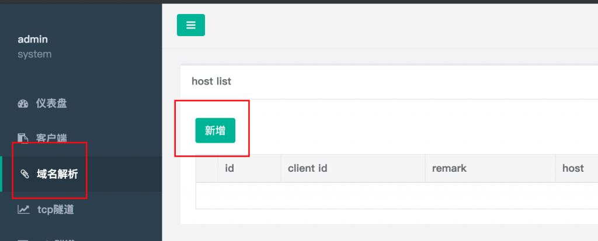
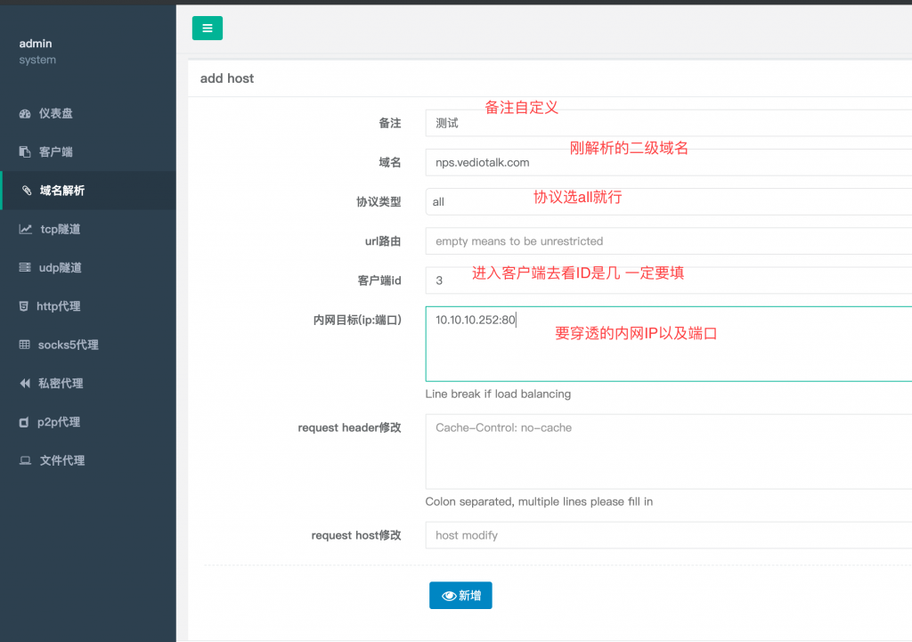
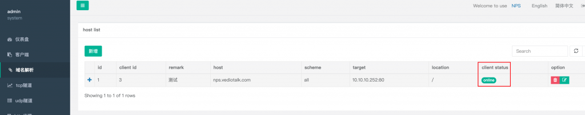
域名这里显示online，就说明绑定成功，已经可以穿透访问了